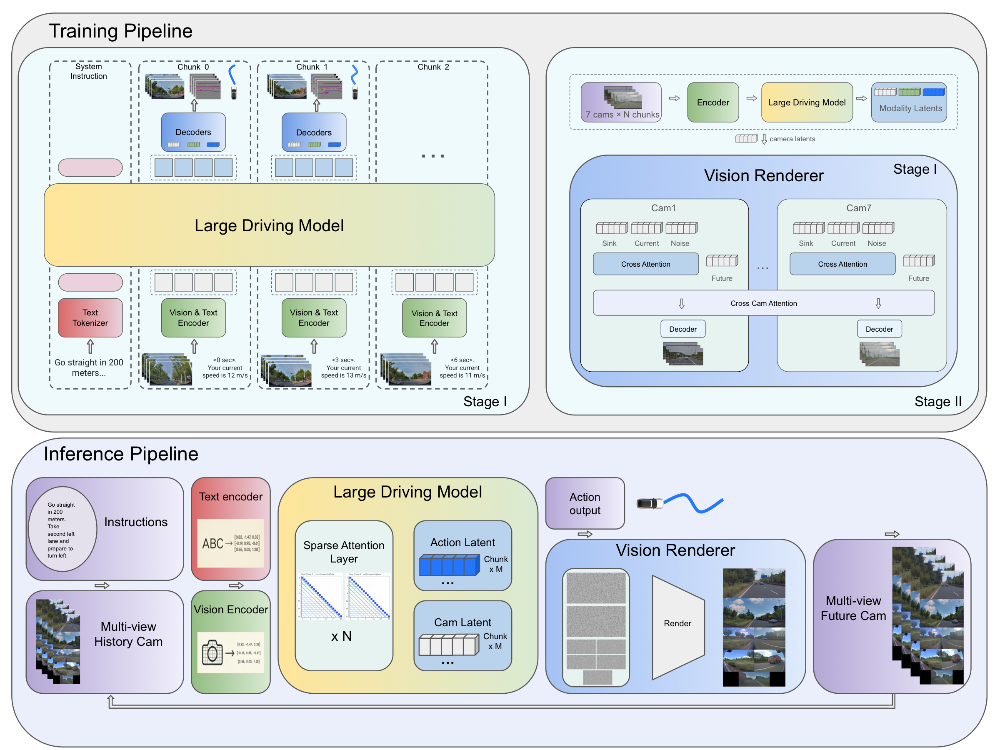

X-Foresight：面向多视角相机的预测式世界模型，支持实时动作控制

为什么 VLA 需要预测式世界建模？
物理世界知识主要蕴含在视频中。让视觉-语言-动作（VLA）模型获得此类知识，是实现安全、可泛化规划的基础。 预测式世界建模通过从历史观测预测未来视频，使 VLA 内化驾驶的物理动力学与长时因果。然而朴素的逐帧预测面临两大挑战： （1）视频 token 不同于语义离散的文本 token，本身低熵且冗余，模型容易退化为平凡外推； （2）瞬时动力学需要密集的短时帧，而长时因果在长且可变的时段内展开。 我们提出 X-Foresight，将预测式世界模型直接集成进 VLA 架构，联合学习世界建模与实时动作控制。 其核心是长时分块自回归策略：在语义相距更远的块之间预测以避免平凡外推，同时保留块内密集帧以捕捉瞬时动力学。 课程学习计划逐步延长预测时段；时序重要性采样将监督集中到安全关键的块； 基于扩散模型的多视角渲染器恢复像素级的高保真外观。
主要贡献
- 长时分块自回归策略：摆脱逐帧外推的平凡性，同时保留块内密集动力学 —— 以可控代价获得更广阔的世界因果。
- 带延展视野的课程学习（CLEF）：将块间步长从 1 秒逐步扩展到 3 秒，稳定长时预测。
- 时序重要性采样（TIS）：以加权纵/横向加速度峰值识别并集中监督到安全关键块。
- 基于扩散模型的多视角渲染器：嵌入自回归回路，恢复环视相机的真实质感。
分块预见，而非邻帧外推
逐帧预测在短时间内提供的监督信号过弱 —— 相邻帧差异极小，模型容易塌缩到平凡外推。简单的时间下采样 虽能延长预测视野，却会丢失轨迹预测所需的运动线索。
分块预见在 1 秒的每个块内保留短时结构，又要求模型在每个自回归步预测更长一段未来。 扩大块间步长（延展视野）能在不增加计算的前提下延长预测视野； 时序重要性采样则把有限的训练预算导向安全关键操作。

大型驾驶模型 + 视觉渲染器
X-Foresight 包含两个模块。大型驾驶模型（LDM）是一个自回归 Transformer， 以多视角观测、语言、自车状态为输入，每步预测三类目标：用于实时控制的自车动作、 表征周围空间结构的鸟瞰图（BEV），以及概括各视角未来外观的逐相机潜空间 token。 视觉渲染器是一个基于扩散模型的解码器，将渲染出的画面回灌给 LDM 作为新的观测， 形成闭环自回归。

大型驾驶模型（LDM）
多模态提示：全局系统提示之后是若干时序块
[ li, Oi, Ai, Qi ] ——
视野文本、ViT 多视角 token、自车状态、用于触发未来变量预测的查询 token。
采用教师强制方式，联合优化动作、相机与 BEV 损失。
视觉渲染器
基于 DiT 视频生成器与整流流（rectified flow）目标，沿用 X-World 的视-时联合注意力与 3D 因果 VAE。 渲染器仅以 LDM 的相机 token 为条件（不接入动作捷径），在恢复像素级细节的同时， 完全受控于 LDM 的潜空间想象。


工业规模的多相机驾驶数据
我们构建了约 28 万小时 的内部驾驶数据集 —— 共 3,400 万个片段（每段最长 30 秒）， 多视角观测被 token 化为 13.8 T tokens。7 路环视相机（前鱼眼、前长焦、左/右前、左/右后、后） 提供 360° 覆盖；视频以 12 Hz 原生存储，训练时降采样到 4 Hz， 在运动保真与序列长度之间取得平衡。


闭环回放
下方每个片段都是一次完整的闭环回放：每步 LDM 输出下一个自车动作与一秒的多视角潜空间 token， 视觉渲染器将其解码为 7 路环视画面后，再进入下一步预测。点击下方按钮切换不同示例。
生产规模对比
完整 X-Foresight 模型（H=21，启用 CLEF 与 TIS，1024 GPU 训练）与同等规模反应式 VLA 基线对比。 碰撞率下降 16%，横向 ADE 改进 6.4%，总体 CCES 在安全与合规维度获得主要收益 —— 正是以世界知识为驱动的预见性控制所期望的结果。
| 方法 | ADE ↓ | FDE ↓ | 碰撞 ↓ | 合规 ↓ | 舒适 ↓ | 效率 ↓ | 安全 ↓ | 总分 ↓ | ||
|---|---|---|---|---|---|---|---|---|---|---|
| 横 | 纵 | 横 | 纵 | |||||||
| 基线 (H=1) | 0.1675 | 1.1387 | 0.4153 | 2.9117 | 0.228 | 1.5413 | 5.1267 | 4.1090 | 0.6023 | 3.8319 |
| X-Foresight（本工作） | 0.1567 | 1.0982 | 0.3789 | 2.7924 | 0.191 | 1.3747 | 5.4912 | 4.2050 | 0.5718 | 3.7778 |
训练视野 H 的影响
| 视野 | ADE ↓ | FDE ↓ | 碰撞 ↓ | 合规 ↓ | 舒适 ↓ | 效率 ↓ | 安全 ↓ | 总分 ↓ | ||
|---|---|---|---|---|---|---|---|---|---|---|
| 横 | 纵 | 横 | 纵 | |||||||
| H = 1 | 0.1923 | 1.2409 | 0.4881 | 3.1935 | 0.263 | 1.6000 | 5.1475 | 4.1085 | 0.6903 | 4.0000 |
| H = 6 | 0.1864 | 1.2196 | 0.4691 | 3.1178 | 0.262 | 1.5613 | 5.1132 | 4.1175 | 0.6690 | 3.9405 |
| H = 21 | 0.1810 | 1.2110 | 0.4571 | 3.0988 | 0.245 | 1.5090 | 5.0337 | 4.1060 | 0.6505 | 3.8627 |
CL · CLEF · TIS 消融
| 方法 | ADE ↓ | FDE ↓ | 碰撞 ↓ | 合规 ↓ | 舒适 ↓ | 效率 ↓ | 安全 ↓ | 总分 ↓ | ||
|---|---|---|---|---|---|---|---|---|---|---|
| 横 | 纵 | 横 | 纵 | |||||||
| 继续 H=6 | 0.1741 | 1.1807 | 0.4344 | 3.0087 | 0.270 | 1.4833 | 5.1160 | 4.1795 | 0.6430 | 3.8697 |
| + H=21, CL | 0.1718 | 1.1671 | 0.4277 | 2.9856 | 0.238 | 1.4890 | 5.1883 | 4.1530 | 0.6270 | 3.8576 |
| + H=21, CLEF | 0.1692 | 1.1571 | 0.4181 | 2.9421 | 0.230 | 1.4930 | 5.1990 | 4.1360 | 0.6135 | 3.8385 |
| + H=21, TIS | 0.1696 | 1.1578 | 0.4195 | 2.9413 | 0.216 | 1.4760 | 5.1523 | 4.1455 | 0.6082 | 3.8134 |
视觉渲染器保真度

| 方法 | FID ↓ | FVD ↓ | ||||
|---|---|---|---|---|---|---|
| 上界 | 1 s | 6 s | 上界 | 1 s | 6 s | |
| 相机潜空间解码器 | 31.83 | 31.93 | 36.73 | 558.70 | 558.79 | 606.60 |
| 视觉渲染器 | 0.47 | 1.51 | 2.84 | 4.39 | 11.28 | 29.52 |
训练吞吐
| 注意力实现 | 单步耗时（s）↓ | 加速比 ↑ |
|---|---|---|
| FlashAttention-2 | 24.50 | 1.00× |
| 带本文掩码的块稀疏注意力 | 15.40 | 1.59× |
论文、引用与贡献者
技术报告已通过 arXiv 与 PDF 发布。如果 X-Foresight 对你的研究有帮助，请引用：
@techreport{xforesight2026,
title = {X-Foresight: a Predictive World Model Foreseeing High-Fidelity Multi-view Cameras with Real-Time Action Control},
author = {{PWM Team}},
year = {2026},
institution = {XPeng Inc.},
url = {https://arxiv.org/abs/XXXX.XXXXX}
}
贡献者
- 顾问
- Yu Zhang, Xianming Liu
- 项目负责人
- Zhuangzhuang Ding, Pengkun Zheng
- 核心贡献者 （按姓氏字母排序）
- Baolu Li, Jingyu Qian, Rui Guo, Yilun Chen
- 贡献者
- Hanpeng Liu, Yuan Lin, Junhong Zhou, Ruixin Liu, Willow Yang, Yutong Zheng, Zhenli Zhang
- 技术项目经理
- Tenglong (Victor) Gu